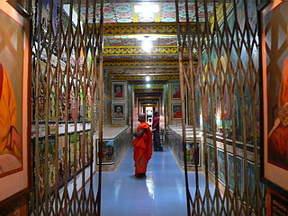
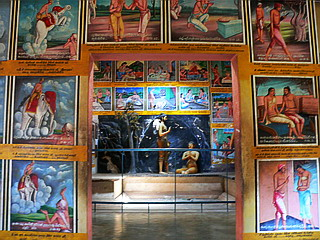

WeherehenaTemple〜地下の巻〜/Matara
スリランカの旅もいよいよ最南端の街、マータラまでやって来た。
向かった先は郊外にあるWeherehenaTemple。
事前の調査ではスリランカで最も面白そうな大仏さんを擁する寺である。
やや前のめり気味に寺の境内に入る。が、どこにも大仏は見当たらない。
あるのは併設の小さな学校と象さんの噴水と5階建て程ののビルだけ。
休み時間なのだろうか、学校の前をうろうろ探していたら2分で全校生徒の晒し者になっちゃいました。
気のせいかスリランカも南に行けば行くほどニホンジン珍しい係数が高いようで、歩いているだけで注目されたり、ビックリされたり、挙句の果てにはチビッコに泣かれたり…お騒がせしました。
で、全校生徒に聞き込みの結果、目の前にあるビルが大仏だという。
えっ。コレ？
その建物に近寄ると、その佇まいに脂汁垂れまくり。
壁という壁が漫画チックなイラストで埋め尽くされているではないか。
確かに普通の建物ではない。だってこんなオフィスビルとかありえないでしょ。
良く見ると軒裏にまで描き込む念の入れよう。
テラスからこちらの様子をじーっと窺う家族連れ。
父ちゃん「ホレ、見ろ。アレがニホンジンだぞ」みたいな感じで凝固＆凝視。
…そんな珍しいすか、俺。
で、建物を回りこむと、ああ納得。
ビルに見えた建物は大仏さんの覆屋だったのだ。
ただでさえインパクトが強烈な大仏さんなのにまるで格納庫のごとき覆屋に収まっているその姿ったら。
奈良の東大寺の大仏殿のファサードを剥ぎ取ったかのような唐突感があって面白い。
大仏さんの前には四角い池がありその四隅にはアホ面の子供のコンクリ像が。
ぬあんと、コレ、賽銭箱なんです。
お口にお賽銭を入れてね。という仕組み。そこまでコンクリ化しますか。
この賽銭ボーイの向かいにもイラストバリバリの建物があり、お坊さんがおいでおいでをしている。
「小生は大仏を見に来たのであって、こちらのお堂を先に拝観するのは本意ではないので遠慮つかまつり候」という意味の事を言うと、そのお坊さん、「ちっちっちっ。ここが大仏へのフェアウェイだぜ」と（いう意味）の事。
チョット待て。
何で大仏に行くのに大仏とは池を挟んだ対面の建物に行かねばならんのじゃ。
良くわからないがお坊さんに導かれるままに階段を下りて地下に向かう。
一体どこへ連れて行くのだろう、このお方…
階段を下りたら、アラびっくり。
長いトンネルがはるか向こうまで続いているのだ。
その向かう先はズバリ大仏さん。位置的にいうと池の真下を突っ切って大仏さんに到っている。
大仏への地底参道だったのだ。

ふと見上げれば壁には人物の肖像画が。
一瞬、亡くなった人の供養かと思ったが、どうやら寺への高額寄進者のようだ。中には日本の方もいらっしゃるようで。
一体幾ら寄進すれば肖像画を掲げてくれるのだろう。怖くてお坊さんには訊けませんでした…
さて、大仏さんへのトンネルの入り口の左脇にも部屋があり、なにやら濃厚なオーラが漂いまくっているような。
ので、大仏隧道は後回しにして先にこちらの部屋へお邪魔しますよ…
壁、天井、梁、柱…床以外すべて隙間なくみっっっしりと濃い目のイラストが描かれていたのであった。
空間恐怖症的とでも言うんでしょうか。とにかく空いてるスペースには全部ペイントされている。
ただし無闇矢鱈に空いている空間を埋めつくす、というのではなく、計画的にびっちり埋めている感じ。
…いきあたりばったりじゃないところに逆に怖さを感じてしまうんですけど…
ホール部分は傾斜地の法面にあるので、地下とはいえ外光が射していてそんなに暗くはない。
こちらにも高額寄進者の肖像画が。
さて、イラストを見ると何コマかでひとつの寓話になっている御様子。
まあ、マンガみたいな感じです。
中でも面白かったのはこちら。
妻の浮気シーン。
で、その浮気相手を部屋に導き入れるためにダンナに目隠しをさせてバイオリンを弾かせる。
そこに窓から浮気相手がやってきて二人でダンナの奏でる甘〜い音楽をバックに踊りだす、という内容。
哀れなのは何も知らないダンナ。かわいそうに。
そういえばこんなハナシ、わが国の落語にもあったような…
こちらは普段嫌われている灰色君の話（推定）。
いつも嫌われているけど、時として子供を救ったりもするやさしい鬼さんなんだよ、って鬼じゃないのか…
一方灰色女バージョンも。
灰色女は子供をさらっていったが、どんな時でも授乳をかかさないやさしい鬼さんなんだよ、って鬼じゃないんでしたね。
壁中がこんな感じのイラストで仏教の素晴らしさをアピールしている…んだと思う。
イラストも作風が色々なので、何人かの人物が描いているのだろう。
果たしてこの寺に描かれている説話を読破した人は何人いるのだろう？
とてもじゃないが1日で読みきれる量じゃないっすから。
究極の漫画寺といっても差し支えないだろう。
イラストの合間合間に人形が配置されているが、イラストの圧倒的な迫力に押され気味。
灰色君の手も腐ってしまいましたね。

マンガ大ホールの奥の方は物置になっていて先に進めそうになかったので、再び戻り、いよいよ大仏参拝隧道へと向かう。
こちらももっちろん隙間なしの超特盛りイラスト尽くし。
「お願いですからもう、やめて下さい！」って言っても「ハイ、じゃんじゃん〜」「もっともっと〜」といってそばを入れてくるわんこそばを思い出したのは偶然ではなかろう。
参拝隧道は真っ直ぐ大仏さんに向かっているのかと思いきや、バリケードなどが置かれ、真っ直ぐ進めない。
変わりにS字の脇道があり、そちらを通る事になる。
当然のごとくそちらのルートにもみっちりびっちりイラストが描かれている。
↓こんな感じです。
（※青が地上部、黄色が地下部分、もちろん縮尺とかは超テキトーです）
地下参拝隧道にも様々なイラストがあって、頭の中では「ハイ、じゃんじゃん〜」「もっともっと〜」と響きっぱなしだったのだが、一番好きだったのはコレ。
「この中でひとつだけ辛子たっぷりのプリンがあります。皆さ〜ん選んでください〜」
さあ、誰が辛子プリンを選んだでしょう…皆さん、もうおわかりですね。
Ｓ字の最終コーナーには素敵なお坊さん集団が。
「私は僧形をしているが、実は千手観音である。ホレ、正面から見てみるがよい。千手観音であろう…えっ、黄色い衣が見えてるって…」
そんなこんなで大仏さんの真下あたりまでやってきた。
ここはやはり特別な場所のようで本尊と思しき仏像があった。
その仏像の手前に鉄格子で囲まれた穴が開いていたので覗きこんでみると、賽銭箱の奥に何やら小さな小部屋があるのが見えた。
良く見てみるとタイっぽい仏像やストゥーパのミニチュアなどが並んでいた。
あっ！灰色君も混ざってる！
ここからいよいよ地上に戻り、大仏遊びに突入するのだが、チョット休憩いれます。